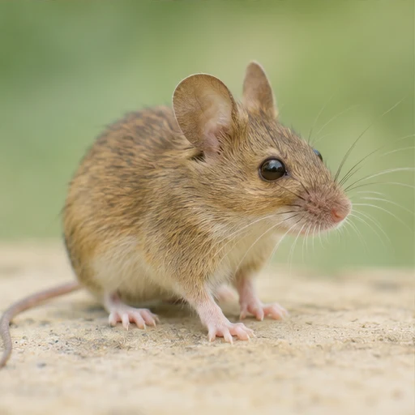

01Qu’est-ce qu’un protocole ?
C’est une suite d’étapes à suivre pour réaliser une expérience.
MISSION 04 / 06 · RESPIRATION
La respiration chez la souris

DÉFI 1 / 5
Il t’aide à revoir l’essentiel.
L’hypothèse
Pense au gaz que la souris utilise pour respirer.

L’autre gaz
Un gaz rejeté s’accumule dans la boîte.
Test et témoin
On étudie l’effet de la souris sur l’air.

Le bon instrument
Le symbole du dioxygène est O₂.
Les deux tubes
Compare la transparence des deux tubes.
BILAN DE LA MISSION
Seule la boîte test contient la souris. On prévoit que le dioxygène diminue et que le CO₂ augmente. L’oxymètre mesure le dioxygène et l’eau de chaux se trouble en présence de CO₂.
C’est une suite d’étapes à suivre pour réaliser une expérience.
En présence de la souris, la quantité de dioxygène diminue et celle de dioxyde de carbone augmente dans l’air de la boîte.
La présence ou l’absence de la souris. C’est la variable indépendante.
On suit les quantités de dioxygène et de dioxyde de carbone. Ce sont les variables dépendantes.
On prévoit une boîte test avec la souris et une boîte témoin sans souris. Toutes les autres conditions sont identiques.
On prévoit une sonde d’oxymètre dans chaque boîte pour comparer les mesures.
On prévoit un tube d’eau de chaux dans chaque boîte. L’eau de chaux se trouble en présence de dioxyde de carbone.
Elle sert de référence pour déterminer si les variations observées sont liées à la présence de la souris.